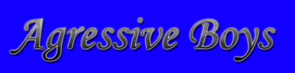
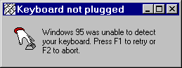

hhehehe
logotipo bunitinho...
o site também era bunitinho...
mas tinha um pequeno buraquinho!
"site bugado é que nem sexo
você, acha o buraco e poe
la dentro o seu menino "
defaced now!!!
" Napster r0x "
Ja saiu um crack para
pegar qualquer musica no napster
Procure na internet huhauhauhauhauhau
/Greetz:
Adobe, Linux, Crative, Igor, chm0d, Senna Spy
, the_killer e godo
/fuck:
Microsoft, Virus, Chernobyl, Prof. Física and more...